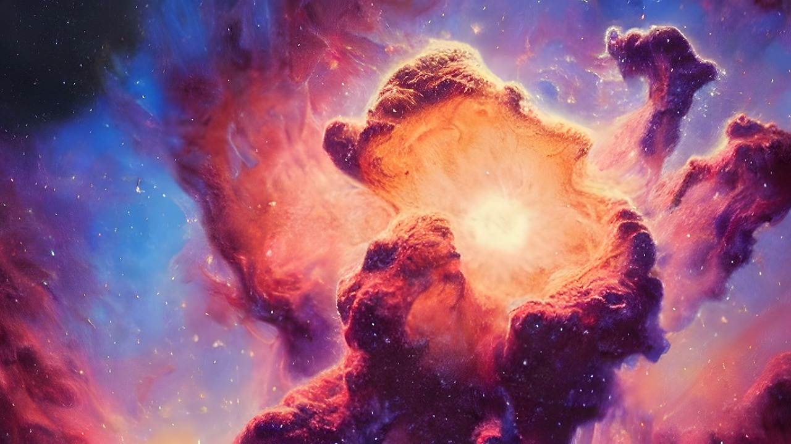
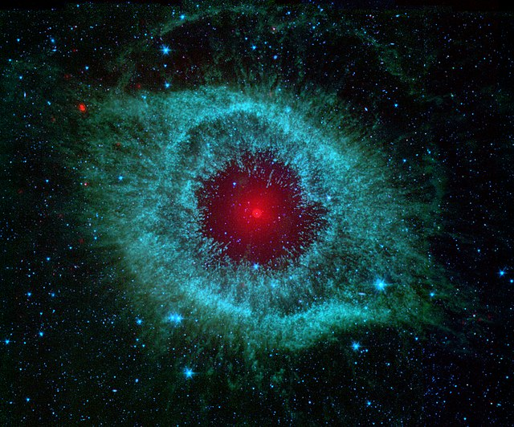
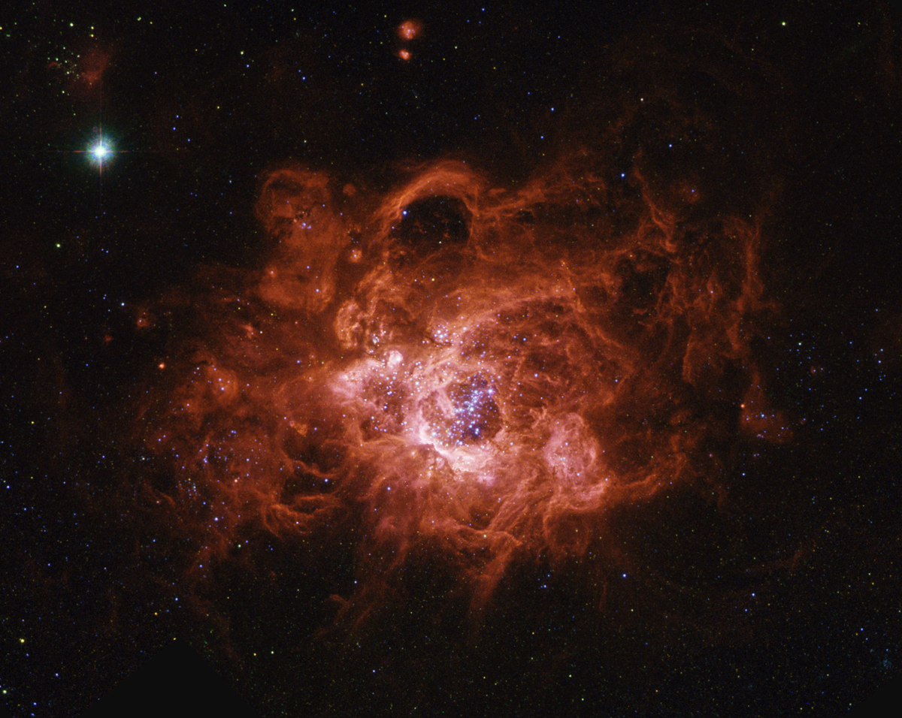

Nebula
Nebula (dari bahasa Latin"kabut" nebulae atau nebulæ, dengan ligatur) adalah awan antarbintang yang terdiri dari debu, gas, dan plasma. Awalnya nebula adalah nama umum yang diberikan untuk semua obyek astronomi yang membentang, termasuk galaksi di luar Bima Sakti (beberapa contoh dari penggunaan lama masih bertahan; sebagai contoh, Galaksi Andromeda kadangkadang merujuk pada Nebula Andromeda).
Dalam astronomi ada istilah nebula, yang maksudnya adalah awan antar bintang. Awan antar bintang ini merupakan kumpulan gas dan/atau debu dengan kerapatan rendah, jauh lebih rendah dibandingkan kerapatan air. Hanya saja karena dilihat dari jauh, maka tampak seperti gumpalan. Logika yang mungkin sama dengan awan biasa (uap H2O yang menggumpal di langit) yang lazim kita lihat
Sebuah nebula bisa terlihat kalau ada bintang disekitarnya. Untuk melihat sebuah benda, kita pasti butuh cahaya. Nah, gas dengan kerapatan rendah tak punya energi yang cukup untuk menghasilkan cahaya, makanya si nebula jadi gelap. Kalau ada bintang disekitarnya, maka cahaya bintang akan dipantulkan oleh gumpalan awan (kalau bintang berada di „depan‟ nebula), atau cahaya bintang menembus nebula (kalau bintang berada didalam/dibelakang gumpalan). Ini yang membuat si nebula terlihat
Pembagian Nebula
Nebula Helix
Nebula Helix, yang tersusun atas selubung gas dan cakram yang terlontar dari sebuah bintang mati sekelas matahari, menunjukkan sebuah struktur yang kompleks dalam skala terkecil yang dapat diamati. Citra terbaru dari Spitzer ini diambil dalam rentang 5 gelombang inframerah, dengan panjang gelombang 3.2, 4.5, dan 8 mikron, yang masing-masing ditampilkan dalam warna biru, hijau, dan merah.
Citra ini memperlihatkan apa yang disebut sebagai “simpul komet” (cometary knots), dalam warna biru-hijau yang terbentuk akibat materi molekuler yang tereksitasi oleh gelombang kejut atau radiasi. Bagian ekor dari simpul terlihat lebih merah karena diselubungi oleh radiasi ultraviolet dari bintang di pusat. Spitzer telah memetakan struktur terluar dari nebula selebar 6 tahun cahaya ini, dan menyelidiki bagian dalamnya, di daerah sekitar bintang mati di pusatnya, untuk menyingkap sesuatu yang terlihat seperti sebuah sistem planeter yang telah bertahan dari kematian bintang induknya yang chaotik. Teleskop ruang angkasa Spitzer diluncurkan dari Cape Canaveral, Florida, pada 25 Agustus 2003. Selama 4 tahun beroperasi, Spitzer telah memperlihatkan pandangan melalui gelombang inframerah dari berbagai objek, mulai dari asteroid di tata surya kita hungga galaksi di batas alam semesta yang teramati.
Nebula Red Rectangle (Persegi panjang merah)

Sebuah foto baru yang tajam dari nebula terang bernama “Red Rectangle” atau “persegi panjang merah” menunjukkan bahwa kumpulan debu dan gas itu lebih mirip bentuk tangga dengan tanda silang (X) raksasa di tengahnya.
Foto terbaru dari objek langit paling tidak biasa di galaksi ini dibuat oleh teleskop ruang angkasa Hubble pada tahun 1999, namun baru diumumkan secara luas hari Selasa kemarin (11/5). Nebula itu sendiri baru ditemukan pada awal tahun 1970-an. Karena bentuk dan warna yang terlihat waktu itu, para astronom menyebutnya sebagai “Red Rectangle.”
“Struktur Red Rectangle yang dilihat Hubble benar-benar kompleks. Bentuk yang sangat mempesona adalah gambaran seperti anak tangga, walau sebenarnya itu adalah kerucut gas yang bertumpuk-tumpuk,” kata Hans Van Winckel dari Universitas Katolik Leuven, Belgia.
Adapun bintang kembar pada inti Red Rectangle, yang secara resmi disebut HD 44179, adalah bintang-bintang sekarat yang mendekati ajalnya. Menjelang padam, keduanya terus menerus melepaskan partikel lapisan terluarnya 6 ke ruang angkasa, sehingga terbentuklah nebula atau kumpulan debu dan gas yangberlapis-lapis.
Nebula Emisi Triangulum NGC 604
Nebula emisi Triangulum NGC 604 terletak di dalam lengan spiral Galaksi M33, 2.7 juta tahun cahaya dari Bumi. Nebula ini adalah daerah tempat terbentuknya bintang-bintang
Nebula Gelap
Ada daerah tertentu di ruang antar bintang yang memiliki kepadatan debu yang sangat tinggi, sehingga cukup untuk menjadi awan (nebula) yang kedap cahaya. Walaupun kepadatan partikelnya masih jauh lebih rendah dari pada di Bumi, namun besarnya awan ini mengakibatkan terhalangnya cahaya bintang. Celah gelap memanjang di daerah Cygnus dan Horsehead Nebulae (Kepala Kuda) di Orion adalah contoh nebula gelap, yang menghalangi datangnya berkas cahaya bintang ke arah pengamat.
Nebula Pantulan
Hamburan oleh debu antar bintang, terutama cahaya biru, terkadang menerangi daerah di sekitarnya. Akibatnya, awan debu antar bintang ini akan tampak biru karena cahaya bintang di belakangnya melintasi awan debu ini. Contoh dari nebula pantulan ini adalah gugus bintang Pleiades di Taurus serta Trifid Nebulae di Sagittarius
Eagle Nebula

Eagle Nebula merupakan cluster muda yang terbuka, ditemukan oleh Jean Philippe de Cheseaux pada tahun 1745-1746. Ini menggabungkan penyerbaran emisi nebula atau wilayah H II ( tempat kelahiran bintang-bintang ). Eagle Nebula berjarak 7000 tahun cahaya, kecerahan bintang pada nebula mempunyai cahaya yang terang dan dapat dilihat dari teleskop.
Carinae Nebula
Carinae Nebula merupakan bintang besar yang mengelilingi beberapa cluster bintang. Untuk Eta Crinae dan HD 93129 A adalah dua bintang yang mengelilingi galaksi Bima Sakti.